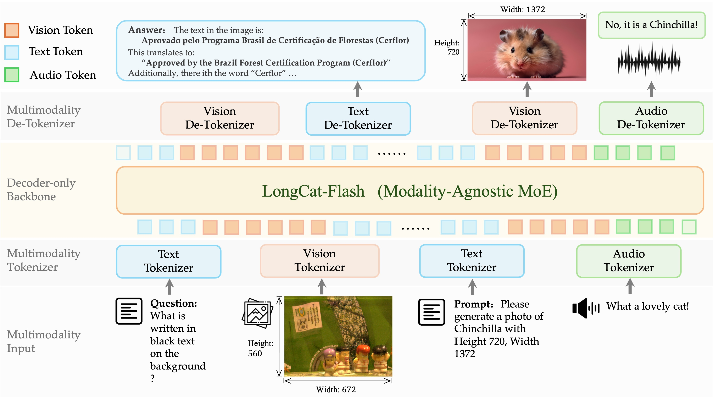

00全景与读法
两个对象：Kimi K3（2026-07，2.8T / 104B 激活，arXiv 2607.24653）的连续特征路线——MoonViT-V2 完全 from scratch + 纯 next-token 训练、无任何对比学习阶段，native resolution 打包，projector 进 backbone，从第一个 token 起与语言联合优化；LongCat-Next（美团，2026-03，68.5B / A3B，arXiv 2603.27538）的离散 token 路线——DiNA：全模态离散化为同源 token，dNaViT 8 层 RVQ、28× 像素压缩，单一自回归目标同时做理解与生成。两者在移除对比学习遗产上殊途同归；分歧在于视觉信息以何种形态进入模型——输入适配器，还是另一种词表。两者均未披露数据配比，是复现的最大缺口。
每一节固定三段：K3 · 连续特征路线（左栏，灰）/ LongCat-Next · 离散路线（右栏，橙）/ 本站判断（下方色块：分歧的本质、原文是否给了理由、对 RL-on-NPU 的含义）。本篇是双工作对照，两栏不是"基线与做法"，而是两条平行路线；左右分配全文固定。数字按来源分三类标注：第三方 独立测量、自报 厂商 / 作者口径、推断 本站分析。两家规模差 40 倍，评测数字不可直接互比。
本篇性质：双工作对照调研（K3 技术报告此前已精读 + 两路定向检索补齐），主题限定在原生多模态的数据、架构、训练三件事，承接 D24（K3 首发与报告跟进）、D21（LongCat 系），不重复两篇已覆盖的内容。MoonViT-V2 的 projector / 位置编码细节来自第三方 config 逆向与解读页，原文已标注待复核，本文保留该限定。
01"原生"为什么成了关键词
上一代多模态模型的标准做法是嫁接：以预训练语言模型为基座，外接 CLIP / SigLIP 系视觉编码器，中间加对齐阶段（对比学习或 caption 预热），再做联合微调。该路线的代价在 2025–2026 年逐渐显现：对齐阶段引入独立的训练目标与数据管线，编码器与 backbone 预训练来源不同，留下持续的表示失配，长上下文与视频场景下该失配被进一步放大。"原生"（native）的主张是：视觉自预训练起始即与语言共享同一目标函数。对"相同"的实现方式，2026 年出现了两条不同路线。

这张图怎么读
先看从"上一代"出发的两条边的标注："去 CLIP 遗产"与"去连续特征"。两条路线各自去掉了嫁接式的一样东西：K3 去掉的是编码器的对比学习来源，但保留连续特征；LongCat-Next 去掉的是连续特征本身，视觉变成词表。这两条边的差异就是全文的分歧所在。
再看底部以虚线汇合的"共同点"节点：两条路线都经由它，说明"移除对比学习遗产"不是某一方的特色而是原生路线的共同定义。左右两栏各三个节点的顺序一致（编码 → 组织 → 进入 backbone），便于逐层对照：K3 的第三步是"projector 投影"，Next 的第三步是"单一自回归 NTP"——前者仍有一个适配层，后者没有。
K3 · 连续特征路线
自报 视觉保持连续特征，但编码器从零训练、目标函数只有 next-token prediction，与语言 token 交错在同一序列里。2.8T / 104B 激活，2026-07。
LongCat-Next · 离散路线
自报 视觉（与语音）彻底离散化为与文本同源的 token，模型是纯粹的自回归 NTP，无 projector、无连续特征注入，理解与生成天然统一。68.5B / A3B，2026-03。
本站判断两条路线对"原生"的定义在目标函数层面相同（只有 NTP），在表示层面不同。分歧不在训练目标而在视觉进入模型的形态：K3 仍需要一个把连续特征映射进 LLM 隐空间的适配器，Next 把这一步前移到 tokenizer。后续三节（数据、架构、训练）的每一处差异都可以追溯到这一点。
02数据：两种数据学
K3 的数据策略：分域精修、交错输入。报告口径：文本四域（Web / Code / Math / Knowledge）之外，视觉语料覆盖 caption、交错图文文档、OCR、perception、视频，以及一类值得注意的 programmatic multimodal 数据——代码与其渲染结果（SVG / 3D / 网页 / CAD）成对，使模型直接学习"符号 → 视觉"的双向映射。各域经规则过滤 + 分类器质量打分 + 去重，采样率由小模型消融确定。图文 / 视频的配比与视觉 token 占比未公开——这是 K3 多模态部分最大的复现缺口。
LongCat-Next 的数据策略：全部展平为统一序列。不走图文对路线，主干是 web 级交错混排数据（图 / 文 / 音混排网页），展平为统一序列（文本 token 与 <Image_Start>…<Image_End> 包裹的视觉 token、音频 token 顺序排列），使模型直接学习跨模态转移概率——官方称这"打破了数据瓶颈"：散落互联网的混排数据都能以同一格式喂入。图文清洗是三段式：启发式过滤 → 多个开源 LVLM 重写 caption（合成）→ SigLIP 相似度剔除图文不匹配对（值得注意的细节：SigLIP 在这条离对比学习最远的路线中，仍以数据过滤器的角色被保留）。音频 tokenizer 语料约 250 万小时。为防止文本能力退化，配比中混入大量代码 / 数学 / agent 高质量文本。同样，backbone 多模态预训练的 token 总量与精确配比未披露。
K3 · 连续特征路线
自报 分域精修：视觉语料按 caption / 交错图文 / OCR / perception / 视频 / programmatic 分域，规则过滤 + 分类器打分 + 去重，采样率由小模型消融确定。programmatic 数据（代码 ↔ 渲染结果成对）是独有的一类。配比与视觉 token 占比未公开。
LongCat-Next · 离散路线
自报 统一展平：web 级图 / 文 / 音混排数据以同一序列格式喂入，学习跨模态转移概率；三段式清洗末端仍用 SigLIP 相似度过滤；音频 tokenizer 语料约 250 万小时；混入大量代码 / 数学 / agent 文本防退化。token 总量与配比未披露。
本站判断两种数据学与各自的表示形态一致：连续路线需要按任务分域的高质量图文，离散路线的统一序列格式天然适合混排网页。两者共同的信息缺口需要指出：原生多模态的数据配比是当前最不透明的环节——两份报告均披露管线细节而未给出配比数字，这与纯文本时代数据配方保密的行业惯例一致。SigLIP 以过滤器身份留在离散路线里，说明"移除对比学习遗产"移除的是训练目标，而非对比模型作为工具的用途。
03架构：MoonViT-V2 对 dNaViT
K3：MoonViT-V2——从视觉编码器中去除对比学习。401M 参数、27 层、patch 14（架构表口径）。三个设计点：① 完全 from scratch + 纯 NTP，无任何对比学习阶段——这是 V2 相对一代 MoonViT（Kimi-VL 基于 SigLIP-SO400M 初始化）最本质的改变。动机是训练稳定性：报告发现 SigLIP 初始化的编码器与 LLM 联合优化时梯度范数持续偏高且反复 spike，from-scratch 版本全程平稳，且视觉评测追平初始化版本。该结果表明：在足够大的联合训练预算下，CLIP 系预训练不再是必要前提，反而构成数值稳定性负担。② native resolution + NaViT 式打包：图像按原始分辨率直接 patch 化，不 resize 不裁剪不切片，变长序列打包进同一批次；视频帧作为时空体进入——多帧 2D patch 联合展平为单一 1D 序列，同一注意力跨空间 + 时间运行，3D 网格位置编码（以下 projector 与位置编码细节来自第三方 config 逆向与解读页，待原文复核）：可学习 2D 空间嵌入叠加 1D sin-cos 时间嵌入。③ projector 保留，但已轻量化：2×2 pixel shuffle（4 token 合 1）+ 两层 MLP 投影进 LLM 隐空间，视觉特征作为普通 token 与文本交错进 backbone 最底层——视觉在 K3 中仍属于"经适配的输入"。
LongCat-Next：dNaViT——去除连续特征表示。范式名 DiNA（Discrete Native Autoregression）：文本、图像、语音全部映射为同源离散 token，单一 AR 目标，"最小模态特化"。视觉侧自研 dNaViT（Discrete Native Any-Resolution ViT）：SAE（语义对齐编码器）+ 8 层 RVQ 层级量化，像素域压缩至多 28× 仍保持语义与文字渲染保真度；解码用 DepthTransformer 多层 token 合并 + 解耦双轨生成式解码器。语音侧 LongCat-Audio-Codec（Whisper-large-v3 初始化 encoder，语义 / 声学双路，8 层 RVQ）。backbone 是 LongCat-Flash-Lite MoE（68.5B / 约 A3B，带 N-gram Embedding）。核心主张：同一自回归模型同时承担视觉理解与图像生成（以及语音理解 / 低延迟对话），官方主张首次让离散路线在理解 benchmark 上追平连续特征专用模型——理解任务的性能损失长期是离散路线的瓶颈。

这张图怎么读
最值得看的是 backbone 上下两行的 token 序列：三种颜色的方块在同一行里顺序排列，backbone 对它们没有区别对待——这就是"Modality-Agnostic"与"同源离散 token"的图示。输入行与输出行的颜色分布对应四个示例：文本问题 + 图像 → 文本答案（理解），文本 prompt → 图像（生成），音频 → 音频（对话）。理解与生成在图上没有分开的分支，只是输出行里 token 颜色不同。
再看 Tokenizer 与 De-Tokenizer 两层：它们是唯一带模态名的组件，位于 backbone 之外。这与 K3 的形态对照最直接：K3 的 MoonViT-V2 + projector 位于 backbone 输入侧、输出的是连续向量；Next 的 tokenizer 输出的是离散 id，De-Tokenizer 才把 id 还原为像素或波形。图中标注的 672×560 与 1372×720 说明输入与输出均为任意分辨率，与 dNaViT 的"Any-Resolution"对应。图中未画出的是 dNaViT 内部的 SAE + 8 层 RVQ 结构。

这张图怎么读
两条管线各五步、一一对位，逐格对照最有信息量的是第三步与第四步。第三步：K3 是 27 层 ViT（401M，from scratch，纯 NTP），Next 是 8 层 RVQ 层级量化——前者输出连续向量，后者输出离散 id，这一格是两条路线分道的位置。第四步：K3 是薄 projector（4 合 1 + 两层 MLP），Next 是"同源离散 token 与文本 · 音频一序列"——K3 在这一格仍有一个可训练的适配层，Next 在这一格只有序列拼接。
第五步的差异是能力面的差异：K3 进入 2.8T backbone 底层，只做理解；Next 进入 68.5B backbone，"理解与生成同一模型"并由 DepthTransformer 解码回像素。K3 侧第一步的"patch 14"与第三步的"401M · 27 层"是架构表口径；projector 的具体形式（第四步）来自第三方 config 逆向，读图时应保留待复核的限定。
K3 · 连续特征路线
自报 MoonViT-V2 401M / 27 层 / patch 14，from scratch + 纯 NTP；SigLIP 初始化版本联合训练时梯度范数偏高且反复 spike，from-scratch 全程平稳且视觉评测追平。native resolution + NaViT 打包，视频按时空体展平。第三方（config 逆向，待复核）3D 网格位置编码、2×2 pixel shuffle + 两层 MLP projector。
LongCat-Next · 离散路线
自报 DiNA 范式：文本 / 图像 / 语音同源离散 token，单一 AR 目标，最小模态特化。dNaViT = SAE + 8 层 RVQ，像素域压缩至多 28×，DepthTransformer + 解耦双轨解码器还原像素。语音侧 LongCat-Audio-Codec（Whisper-large-v3 初始化，8 层 RVQ）。backbone LongCat-Flash-Lite MoE 68.5B / 约 A3B，带 N-gram Embedding。
本站判断K3 给出了弃用 SigLIP 初始化的理由与证据（梯度 spike 与评测追平），这是两份报告里少见的消融级结论；但其成立条件是 2.8T backbone 的联合训练预算（第 07 节）。Next 的 8 层 RVQ / 28× 压缩是自报的设计点，报告未给出该组数字相对其他层数与压缩比的消融。两者在架构层面的分歧可以概括为：K3 把复杂度放在编码器与 projector，Next 把复杂度放在 tokenizer / de-tokenizer，backbone 则退化为标准 LLM——这一分配决定了第 06 节的系统含义。
04训练：token-0 联合 vs 原生化课程
K3：从第一个 token 起联合。报告明言 native multimodal training strategy——语言与视觉从训练开始就联合优化，视觉与文本 token 交错在单一 next-token 目标内，不存在"先语言后对齐"的阶段划分。配套的稳定性设计即第 03 节的 from-scratch 选择（消除梯度 spike 来源）。基建侧报告仅有一句话级描述：multimodal encoder optimizations 与 MoonEP、memory-efficient training 并列，"在有界显存内维持利用率"；训练期编码器的并行方式与变长图像负载均衡未见公开细节（推理侧旁证：vLLM / Dynamo 部署对视觉编码器用 data-parallel sharding）。
LongCat-Next：分阶段的原生化课程。并非纯"从 step 0 交错"，而是：① tokenizer 独立预训练（dNaViT 与 Audio-Codec 各自重建训练，音频侧分三步）→ 冻结 tokenizer；② Pre-align：冻结语言模型，只训 codebook embedding 与解码头——使离散词表与语言模型的嵌入空间先行对齐；③ 解冻全部参数，以交错数据深度联合训练；④ mid-training 与 SFT（合成长 CoT、任意分辨率生成数据）。冻结 tokenizer 保证离散接口稳定，是该路线独有的稳定性保障。工程口径（自报，provisional）：相对连续方案解码提速约 10×、算力节省约 30%，支持 1M 上下文。

这张图怎么读
左右两栏的节点数量本身就是信息：K3 只有一个训练节点加一个稳定性节点，Next 有四个顺序阶段加一个稳定性节点。两个稳定性节点都以虚线挂在各自的联合训练节点上，且内容互为镜像：K3 靠"编码器从零训练"避免外来初始化带来的梯度 spike，Next 靠"冻结 tokenizer"避免离散接口在联合训练中漂移。两条路线都识别出了同一个风险——视觉侧与语言侧在联合优化中的不匹配——但一个在参数初始化上解决，一个在接口冻结上解决。
Next 的阶段二 Pre-align 是全图唯一"冻结语言模型"的阶段，意味着离散路线在全参联合之前先让词表向 LM 靠拢；K3 没有对应阶段，因为 projector 与编码器在 token 0 起就随 backbone 一起更新。底部虚线连接的"共同点"说明两条课程在文本能力保持上的手段相同（数据配比），而配比数字两者都没有给。
K3 · 连续特征路线
自报 单阶段：语言与视觉从训练开始联合优化，无"先语言后对齐"划分；稳定性保障 = 编码器 from scratch。基建侧仅一句话：multimodal encoder optimizations 与 MoonEP、memory-efficient training 并列；编码器并行方式与变长图像负载均衡未公开（推理侧旁证为 data-parallel sharding）。
LongCat-Next · 离散路线
自报 四阶段：tokenizer 独立预训练并冻结 → Pre-align（冻结 LM，只训 codebook 嵌入与解码头）→ 全参交错联合 → mid-training 与 SFT；稳定性保障 = 冻结 tokenizer。工程口径（provisional）：解码提速约 10×、算力节省约 30%，1M 上下文。
本站判断"原生"在训练课程上并不等于"单阶段"：Next 的四阶段课程仍被称为原生，因为 backbone 的训练目标始终只有 NTP，阶段划分只发生在 tokenizer 与嵌入对齐上。K3 基建侧的一句话描述是本篇最重要的空白：变长图像打包下编码器与 backbone 的负载均衡是连续路线特有的系统问题，报告未给细节。Next 的 10× / 30% 为官方口径，对照基线（"连续方案"具体指什么）未说明，本站不作换算。
05评测与权衡：各占优势区间
自报数字（均厂商口径，且两家规模差 40 倍、不可直接互比）：
| 维度 | K3（2.8T / 104B） | LongCat-Next（68.5B / A3B） |
|---|---|---|
| MMMU 系 | MMMU-Pro 81.6 / 83.4（无 / 带 Python） | MMMU 70.6 |
| 数学视觉 | MathVision 94.3 / 97.8（带工具追平 GPT-5.6 Sol） | MathVision 64.7、MathVista 83.1 |
| 文档 | OmniDocBench 91.1 | DocVQA 94.2，OmniDocBench 超 Qwen3-Omni |
| 视频 | Video-MME（w/ sub）90.0（超 GPT-5.6 Sol 89.5） | — |
| 图像生成 | 不支持 | GenEval 84.44，长文字渲染强 |
| 语音 | — | MMAU 76.40，AISHELL-1 WER 1.47% |

这张图怎么读
先看对照模型的选取：上排的对照全部是 A3B 量级或 Flash-Lite / minimal 档的模型——这张图证明的是"离散路线追平同量级连续模型"，而不是追平旗舰，与原文的限定一致。MathVision 面板上 LongCat-Next 64.7 对 Qwen3-VL-A3B 60.2、Gemini2.5-Flash-Lite 61.9，正是原文表中 64.7 的出处；把它与 K3 的 94.3 / 97.8 放在一起读时，要记住两者相差一个 2.8T 对 68.5B 的档位。
再看 OmniDocBench-EN 面板的箭头：该项越低越好（0.152 为编辑距离类指标），读图时不能按柱高比较。下排前两个面板（TIIF-LONG、LongText-EN）是这张图与 K3 最不可比的部分——它们是图像生成侧的文字渲染指标，K3 不支持图像生成，因此没有对应数字；LongText-EN 93.15 对应原文"长文字渲染强"的表述，与 dNaViT 在 28× 压缩下"保持文字渲染保真度"的架构主张互为印证。原文表中的 MMMU 70.6 与图中的 MMMU-Pro 60.3 是不同基准，不应混读。
K3 · 连续特征路线
自报 以参数规模换取理解上限：MMMU-Pro 81.6 / 83.4、MathVision 94.3 / 97.8（带工具追平 GPT-5.6 Sol）、Video-MME 90.0（超 GPT-5.6 Sol 89.5）——视觉理解已与闭源旗舰同档。不支持图像生成，无语音。
LongCat-Next · 离散路线
自报 以统一建模换取能力覆盖面：理解（MMMU 70.6、MathVision 64.7、DocVQA 94.2）+ 生成（GenEval 84.44、长文字渲染强）+ 语音（MMAU 76.40、AISHELL-1 WER 1.47%）一个模型，小激活低成本。主张理解追平连续——严格说是追平同量级连续模型。
本站判断权衡关系明确：连续路线以参数规模换取理解上限，离散路线以统一建模换取能力覆盖面。LongCat-Next 与 K3 这种 2.8T 旗舰仍差一个档位；K3 不支持图像生成，统一性缺失。两条路线当前并非替代关系，而是分工关系。全部数字为自报；两家的第三方复测（尤其 MMMU-Pro / Video-MME）是检验"原生 > 嫁接"叙事的关键，目前缺位。
06对 RL-on-NPU 的含义
① vision-in-the-loop RL 需要哪条路线？K3 报告的 RL 环境里已有"多模态推理 + vision-in-the-loop 工具使用"（D24 §7）：agent 在轨迹中生成代码渲染图表再观察结果。连续路线下，这要求 rollout 引擎集成视觉编码器、KV 与视觉特征一起管理；离散路线下视觉输出就是 token，rollout 引擎与纯文本 RL 架构同构——环境返回的图像离散化后直接进序列，不需要在推理引擎里嵌视觉编码器。对 RL 系统复杂度这是实质差异（推断）。
② 对昇腾 / 异构硬件的亲和性（推断）。连续路线的训练难点在异构负载：变长图像打包造成编码器与 backbone 的算力配比波动，K3 以专门的 encoder optimization 处理（细节未公开）；离散路线将全部模态归约为纯 NTP，训练系统等价于标准 LLM 训练——没有第二套算子、没有编码器并行、没有模态间负载均衡。对算子生态薄的 NPU 栈，离散路线的工程实现门槛更低（D23"根治层缺位"语境下尤其如此）；代价在于性能上限完全由 tokenizer 质量决定，而 RVQ 类 tokenizer 的训练与解码 kernel 在 CANN 上同样是空白。
K3 · 连续特征路线
推断 rollout 引擎需集成视觉编码器，KV 与视觉特征一起管理；训练侧存在编码器与 backbone 的异构负载均衡问题，K3 以未公开的 encoder optimization 处理。已有 vision-in-the-loop RL 环境的实例（D24 §7）。
LongCat-Next · 离散路线
推断 视觉输出即 token，rollout 引擎与纯文本 RL 同构，环境返回图像离散化后直接进序列；训练系统等价于标准 LLM 训练。代价：性能上限由 tokenizer 决定，RVQ 类 tokenizer 的训练与解码 kernel 在 CANN 上是空白；尚无 RL 后训练细节披露。
本站判断两条路线把系统复杂度放在了不同位置：连续路线放在训练与 rollout 的运行时（编码器并行、负载均衡、引擎内嵌编码器），离散路线放在一次性的 tokenizer 训练（RVQ 训练与解码 kernel）。对 NPU 栈，后者是可以离线完成、甚至在其他硬件上完成后固定下来的成本，前者是每次训练与 rollout 都要承担的成本——这是"离散路线对非 NVIDIA 栈更友好"这一推断的依据。但这一推断的两个前提（tokenizer 可迁移、离散路线的 RL 可行）目前都没有公开工作支持。
07开放问题三条
（a）数据配比未公开：两者均未披露视觉 token 占比——第三方复现原生多模态的最大障碍。（b）from-scratch ViT 的结论边界：K3 证明 401M 编码器可以纯 NTP 目标从零训练，但这依赖 2.8T backbone 的联合预算，小模型语境是否成立未知。（c）离散路线的 RL：LongCat-Next 尚无 RL 后训练细节披露，"离散视觉 token × RLVR"（生成图像的可验证奖励）是尚无公开工作的交叉方向——与 D25 / D27 圈出的空白同属尚无先例的研究窗口。
K3 · 连续特征路线
开放问题落在结论边界：from-scratch + 纯 NTP 的稳定性与追平结论在 2.8T 联合预算下成立，小模型是否成立未知；encoder optimization 细节未公开；视觉 token 占比未公开。
LongCat-Next · 离散路线
开放问题落在下游延伸：RL 后训练细节未披露；离散视觉 token 与 RLVR（生成侧可验证奖励）的结合无公开工作；8 层 RVQ / 28× 这组数字是否会成为被各家消融的超参；配比未公开。
本站判断三条开放问题中，（a）是两者共有的复现障碍，（b）限定了 K3 结论的可迁移范围，（c）是本篇圈出的尚无公开工作的交叉方向。对本站的研究议程，（c）最直接：离散路线若能做 RLVR，则 vision-in-the-loop RL 在国产栈上的实现路径与纯文本 RL 完全一致，第 06 节的系统优势才能兑现。
08总表：连续特征路线 vs 离散路线
| 主题 | K3 · 连续特征路线 | LongCat-Next · 离散路线 · 本站判断 |
|---|---|---|
| 身份 | 2026-07，2.8T / 104B 激活，arXiv 2607.24653 | 2026-03，68.5B / A3B，arXiv 2603.27538，MIT。规模差 40 倍，不可直接互比 |
| "原生"的定义 | 连续特征保留，编码器从零 + 纯 NTP，与文本交错 | 全模态离散为同源 token，纯 AR NTP，无 projector。分歧在视觉进入模型的形态而非目标函数 |
| 数据 | 分域精修（含 programmatic 代码 ↔ 渲染成对），采样率由小模型消融定；配比未公开 | web 级混排数据展平为统一序列；三段清洗末端保留 SigLIP 过滤；音频约 250 万小时；配比未披露。配比是两者共同的最大缺口 |
| 视觉编码 | MoonViT-V2 401M / 27 层 / patch 14，from scratch，弃 SigLIP 初始化因梯度 spike；native resolution 打包；薄 projector（第三方逆向，待复核） | dNaViT = SAE + 8 层 RVQ，压缩至多 28×；DepthTransformer 解码。K3 把复杂度放在编码器 / projector，Next 放在 tokenizer |
| 训练课程 | token 0 起单阶段联合；稳定性 = 编码器 from scratch；基建仅一句话描述 | tokenizer 预训练并冻结 → Pre-align → 全参联合 → mid-train / SFT；稳定性 = 冻结 tokenizer；10× / 30% 为自报口径。两者以镜像方式处理同一风险 |
| 评测 | MMMU-Pro 81.6 / 83.4、MathVision 94.3 / 97.8、Video-MME 90.0；不支持生成 | MMMU 70.6、MathVision 64.7、GenEval 84.44、MMAU 76.40。规模换上限 vs 统一换覆盖面；分工而非替代；全部自报 |
| RL-on-NPU | rollout 需内嵌视觉编码器；训练有异构负载均衡（细节未公开） | rollout 与纯文本同构，训练退化为标准 LLM 训练；RVQ kernel 在 CANN 上空白；无 RL 细节。推断：对 NPU 栈更友好 |
| 开放问题 | from-scratch 结论的小模型边界；encoder optimization 细节 | 离散视觉 token × RLVR 尚无公开工作；8 层 RVQ / 28× 是否成为被消融的超参 |
09原文没给的东西
以下是复现或独立评估时必须自行确定、原文未提供理由或未经独立复现的内容——引用时应保留限定语：
- 数据配比：K3 的图文 / 视频配比与视觉 token 占比、LongCat-Next 的 backbone 多模态预训练 token 总量与精确配比，两者均未公开——第三方复现的最大障碍；
- MoonViT-V2 的 projector 与位置编码细节：3D 网格位置编码（可学习 2D 空间嵌入叠加 1D sin-cos 时间嵌入）、2×2 pixel shuffle + 两层 MLP 来自第三方 config 逆向（kimi-k3-mlx 等），待原文复核；
- K3 训练基建：multimodal encoder optimizations 仅一句话描述，训练期编码器的并行方式与变长图像负载均衡未见公开细节；推理侧 data-parallel sharding 仅为旁证；
- from-scratch ViT 的结论边界：梯度 spike 与评测追平的结论依赖 2.8T backbone 的联合预算，小模型语境未知；
- dNaViT 设计点的消融：8 层 RVQ 与 28× 压缩相对其他配置的对照未给；
- LongCat-Next 的工程口径："解码提速约 10× / 算力节省约 30%"为官方口径（provisional），对照的"连续方案"具体指什么未说明；
- LongCat-Next 的 RL 后训练：尚无细节披露；"离散视觉 token × RLVR"无公开工作；
- 第三方复测：两家的视觉评测分数全部自报，MMMU-Pro / Video-MME 无独立复现；
- 本文原图受限于网络代理可达性，取自 GitHub 托管的 LongCat-Next 仓库 README；K3 仓库 README 无架构或评测配图（视觉分数为表格文本），arXiv 与美团技术博客的配图未能获取，K3 侧全部为本站图。
10可搬走的判断与后续关注
一、"原生"的分歧不在目标函数而在视觉进入模型的形态。两条路线都只用 NTP、都移除了对比学习作为训练目标；K3 保留一个把连续特征映射进 LLM 隐空间的适配器，Next 把这一步前移到 tokenizer。评估任何自称"原生"的多模态工作，先问视觉是被适配的输入还是另一种词表。
二、两条路线以镜像方式处理同一个稳定性风险。视觉侧与语言侧在联合优化中的不匹配，K3 在参数初始化上解决（编码器 from scratch，消除 SigLIP 初始化的梯度 spike），Next 在接口上解决（冻结 tokenizer，离散接口不漂移）。K3 的结论有消融级证据但依赖 2.8T 预算；Next 的做法不依赖规模但把上限交给了 tokenizer。
三、对 NPU 栈，离散路线把系统复杂度从运行时移到了一次性的 tokenizer 训练。连续路线的编码器并行、负载均衡、引擎内嵌编码器是每次训练与 rollout 都要承担的成本；离散路线的 RVQ kernel 是可离线完成的成本。这是推断，其兑现取决于离散路线的 RL 是否可行——目前无公开工作。
LongCat-Next 的 RL 后训练：离散统一模型怎么做 RLVR（尤其生成侧的可验证奖励），美团是否会在 LongCat-2.0 系上复用 DiNA · K3 §5.2.3 细节：multimodal encoder 训练基建若随 CANN / 开源生态披露，变长视觉负载均衡的做法值得单独拆 · 第三方复测：两家的视觉评测分数目前全部自报，MMMU-Pro / Video-MME 的独立复现是检验"原生 > 嫁接"叙事的关键 · 离散 tokenizer 的后续：dNaViT 之后，8 层 RVQ / 28× 压缩这组数字会不会像"3:1 混合比"一样成为下一个被各家消融的超参。